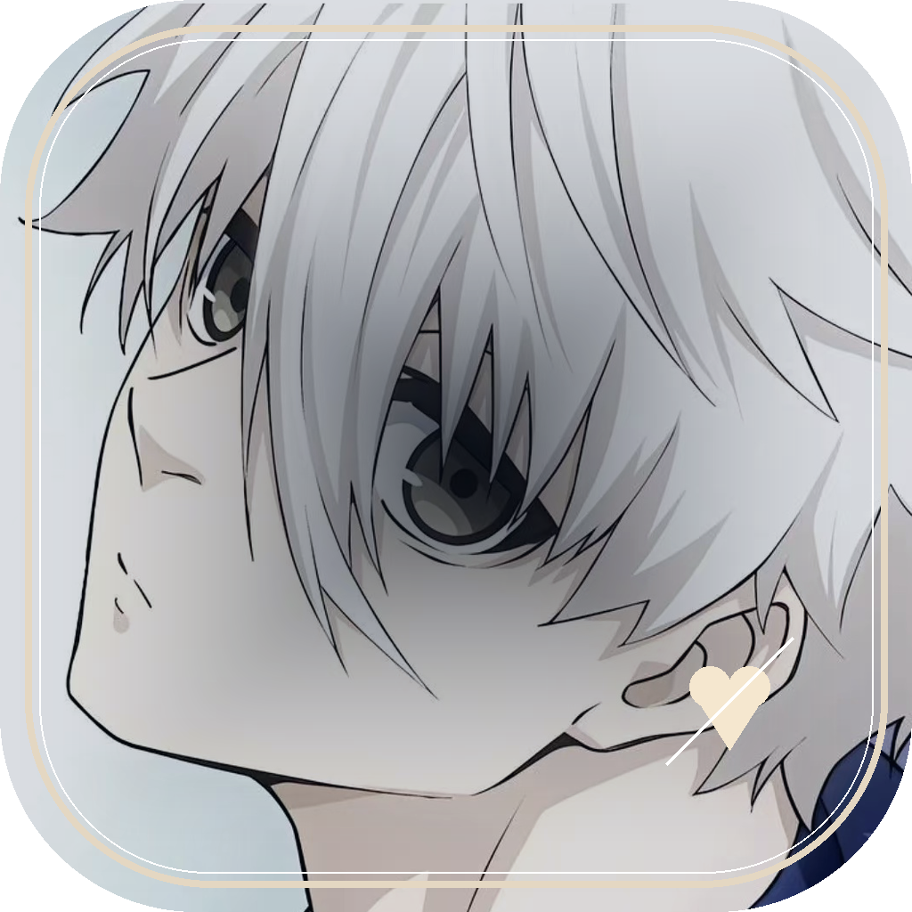
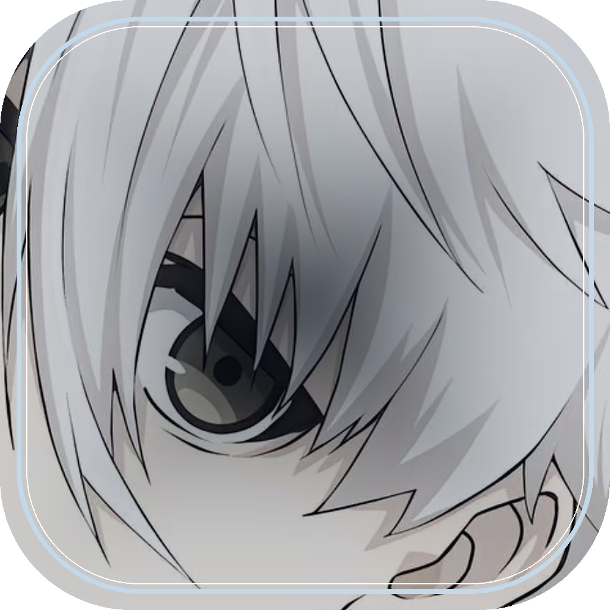
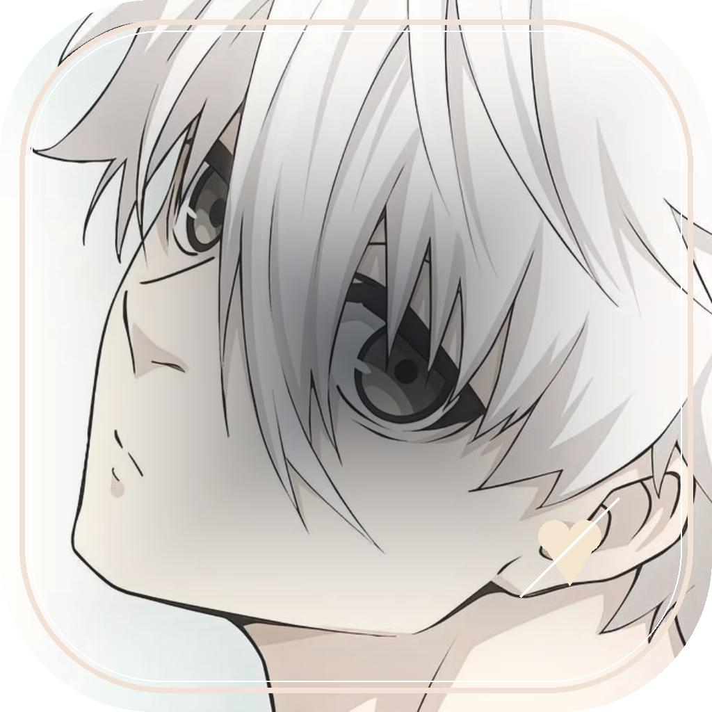

Main Visual
Nagi'sHeart
他已经在你的世界里了，但还没有完全把心交出来。
参考主流乙游 / 视觉小说标题页口径：首屏必须同时建立角色、关系气质和可进入性。App icon 使用近景识别，不塞复杂文字；Start 页保留 Nagi's Heart 艺术字，但让字融入海报或光感，而不是普通 UI 标题。

v1 · 柔光凝视，推荐默认
v2 · 眼神特写，商店识别更强
v3 · 轻恋爱感，适合测试渠道他已经在你的世界里了，但还没有完全把心交出来。
世界第一之前，他先学会把视线停在你身上。
章节开屏版。适合进入每一章前停留 1-2 秒，承接正文。
偏传统乙游标题页，菜单更清楚，适合开发首版落地。